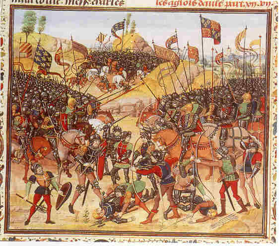
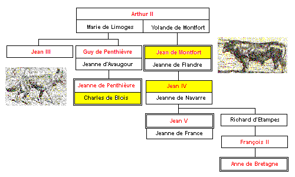

L'hermine
The Stoat
Dialecte de Cornouaille
|
Depuis novembre 2018, on sait que ce chant figure sur le carnet de collecte N°2, pages 165 à 167. Il fait suite à "An Itron Ponker", mentionné avec la chanteuse Annette Le Moine sur la Table B établie par la mère. de La Villemarqué. Ce qui suggère que le chant précédent lui a été chanté à Nizon. Le collecteurs faisait-il des allers-retours entre Nizon et les Montagnes Noires? Selon Luzel et Joseph Loth, cités (P. 389 de son "La Villemarqué") par Francis Gourvil qui se range à leur avis, ce chant historique ferait partie de la catégorie des chants inventés . On sait désormais qu'il n'en est rien! |
 Bataille d'Auray 29 sept. 1364 - Anonyme 'Chroniques de Jean Froissard' BN Paris Ms Fr 2643, fol 292 |
Since November 2018, we know that this song appears in the collection notebook N ° 2, pages 165 to 167. It comes after the song "An Itron Ponker", mentioned, along with the singer Annette Le Moine, on the "Table B" drawn up by La Villemarqué's mother. Which suggests that the previous song was sung to him at Nizon. Was the collector going back and forth between Nizon and the "Black Mountains"? According to Luzel and Joseph Loth, quoted by Francis Gourvil (p. 389 of his "La Villemarqué"), this historical song was " invented " by its alleged collector. We now know that this is not correct! |
Ton
(Sol majeur, ou mode Hypophrygien )
| Français | English |
|---|---|
|
1.Voici que les feuilles du rouvre
|
1. On the oaks open out the leaves
|
Cliquer ici pour lire les textes bretons (versions imprimée et manuscrite).
For Breton texts (printed and ms), click here.

|
Une explication qui va de soi
Dans l'argument introductif, La Villemarqué nous apprend qu'il "avait recueilli ce chant de la bouche de petits enfants, qui la chantaient, en dansant, aux faubourgs de Châteauneuf-du-Faou (à 30 km au NE de Quimper), et je n'y attachais aucune importance, lorsque le Comte de Blois de la Calande , avec la sagacité qui lui était particulière, me donna l'explication" suivante: La ballade a trait, comme les deux précédentes, à la la Guerre de Succession du Duché de Bretagne (1341 - 1364). . Guillaume le Loup c'est le parti français de Charles de Blois (1319 -1364) ("Bleiz" en breton signifie à la fois "Blois " et "loup"). Jean le Taureau c'est John Bull, le parti de Jean de Montfort (1294 - 1341 - 1345) puis de son fils Jean IV (1339 - 1345 - 1399). Quant à Catherine, l'hermine, c'est le peuple breton, lassé de l'un et de l'autre. La miniature en haut de page représente la bataille d'Auray, le 29 septembre 1364 , qui marqua un tournant décisif dans ce conflit, avec la mort d'un des adversaires, Charles de Blois, et la capture de Bertrand Duguesclin. Sa conséquence directe sera la signature du traité de Guérande , le 12 avril 1365, et la reconnaissance officielle de Jean IV de Montfort (mort en 1399) comme duc de Bretagne. La guerre n'avait pas duré 23 ans, car comme les autres épisodes de la guerre de cent ans, elle avait été entrecoupée de pauses et de trêves. De quel conflit s'agit-il ? Dans le Barzhaz les énigmes surgissent parfois où l'on ne les attendait pas. La Villemarqué se rallie d'emblée à l'explication du Comte de Blois de la Calande . On remarquera toutefois qu'on date de 1712 la première apparition du personnage de "John Bull" dans un journal satirique. Son créateur était l'Ecossais John Arbuthnot (1667-1735). - A-t-il reprit un surnom qui avait cours depuis plusieurs siècles ? - Ou bien la gwerz est-elle postérieure à 1712 ? - A-t-elle trait à un conflit beaucoup plus récent que ne l'affirme le Barzhaz, par exemple aux raids anglais à répétition sur les côtes bretonnes et qui sont le sujet des « chants d'Anglais »? Si toutefois, il s'agit bien d'Anglais, puisque ce mot est absent du texte manuscrit original. Le cimier du blason des Ducs de Bretagne comporte des cornes de taureau ornées d'hermines. Le Dictionnaire du Père Grégoire de Rostrenen (1732) à l'article « Alain » (p.25) cite « Gwilhou ou Gwilhaouig ar Bleiz », Guillaume le Loup, mais ignore « Jean le Taureau », expression qui ne figure à aucun de ces deux mots. En outre l'association loup = Charles de Blois ou loup = Français semble inhabituelle. |
A self-evident explanation
In the opening "argument", La Villemarqué tells us that "I knew the song from the singing of little children of Châteauneuf-du-Faou (30 km North-east of Quimper) who danced to it, but I had missed its meaning, until the Count de Blois de la Calande , with his customary shrewdness explained it to me" as follows: Like the previous two songs, this ballad is about the War of the Breton Succession (1341 - 1364) . William the Wolf is the French party of Charles of Blois (1319 - 1364) ("Bleiz" in Breton means both " the town Blois" and "wolf"). John the Bull is... John Bull, the party of John of Montfort (1294 - 1341 - 1345), then of his son John IV (1339 - 1345 - 1399). As for Cathy, the stoat, it's the Breton people, that are tired of both of them... The miniature above represents the battle of Auray, on 29th September 1364, a watershed in the conflict, due to the death of one of the competitors, Charles of Blois and the capture of Bertrand Duguesclin. As a direct consequence , the Treaty of Guérande was signed on April, 12th, 1365, and John IV of Montfort ( who died in 1399) was acknowledged as Duke of Brittany. The war had lasted for 23 years, with many interruptions and truces, like all episodes in the Hundred Years War. What conflict is this? In the Barzhaz puzzles sometimes arise where they are not expected. La Villemarqué straightforwardly agrees with the explanation set forth by Count de Blois de la Calande. Note, however, that the first appearance of the "John Bull" character in a satirical journal dates back to 1712. His creator was the Scot John Arbuthnot (1667-1735). - Did he pick up a nickname that had been in use for centuries? - Or was the gwerz written after 1712? - Does it relate to a much more recent conflict than the Barzhaz asserts, for example the repeated English raids on the coasts of Brittany, which are the subject of the so-called "Saxon songs"? Is the song about English soldiers? It is not sure, since the word "English" is absent from the original handwritten text. The crest of the coat of arms of the Dukes of Brittany features bull horns adorned with ermine. The Dictionary of Father Grégoire de Rostrenen (1732) in the article "Alain" (p.25) quotes "Gwilhou or Gwilhaouig ar Bleiz", Guillaume le Loup, but ignores "Jean le Taureau", an expression which does not appear in the definition of either word. Furthermore, the association wolf = Charles of Blois or wolf = the French seems unusual. |
.
